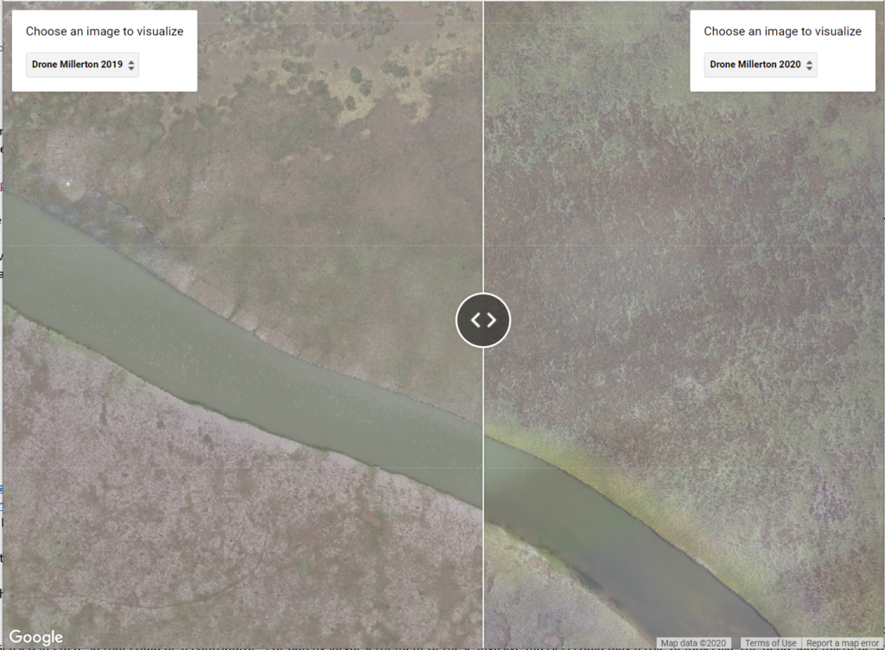
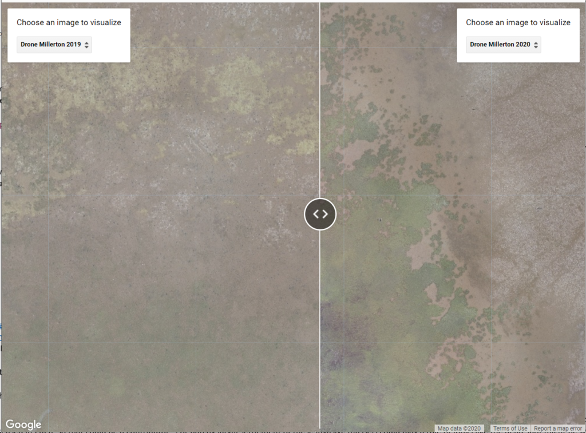
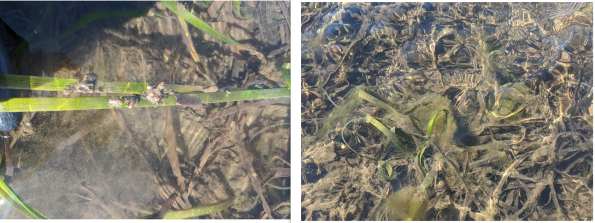

NSF Drone Mapping Finds A Change Of Eelgrass Bed In Spatial Extent And Patchiness
3 minutes read
Citizen Science GIS at the University of Central Florida is using Unoccupied Aerial Systems (UAS), i.e. UAV/drones, to investigate the change of eelgrass beds along the Pacific coast with the Smithsonian MarineGEO program and several universities. Although UCF travel is limited by COVID-19 this summer, we are still able to do the drone mapping with remote training and pre-programming the flight missions collaborating with our research partners. See here for our ongoing remote drone mapping practices.
The eelgrass beds change in spatial extent and patchiness has been well-captured by the drone mapping technique in the Millerton Point site in Bodega Bay, CA. This change is visualized in a side-by-side map in Google Earth Engine.

[Google Earth Engine] A side-by-side eelgrass bed comparison for Millerton Point, CA
The drone mapping as an advanced mapping technology affords 1-3cm spatial resolution for the remotely sensed imagery. This provided a valuable measurement for eelgrass meadow extent, patchiness, and dynamics through time. From the side-by-side map above we can see the center became less patchiness of this eelgrass bed according to the high-resolution drone mapping orthomosaics from 2019 to 2020.

Comparison of the eelgrass "dead patches" in the center of the bed from 2019 to 2020

Comparison of the vast expansion on
of the eelgrass bed from 2019 to 2020
Another interesting pattern to note is a vast expansion of the eelgrass edge in the eelgrass bed. "It is really shocking to see just how much this bed expanded in only one year. Last year this bed had virtually no disease. This year it has substantially more, and some dead patches are clearly visible in the center." said by Dr. Stachowicz, Professor in the Department of Evolution and Ecology at UC Davis.

Photo of live eelgrass and heavily fouled dead eelgrass, picture by Dr. Deanna Beatty
This $1.26 million NSF grant is led by Dr. Emmett Duffy and the Smithsonian MarineGeo program. Dr. Timothy Hawthorne serves as the UCF PI and Dr. Bo Yang co-leads the UCF portion.
Stay tuned for more remote drone mapping practice in Washington, Alaska, and Oregon. Stay updated on all of our exciting work at Citizen Science GIS by following us on our social media: Twitter, Facebook, Instagram, and Linkedin.